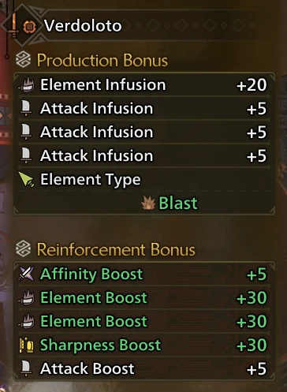
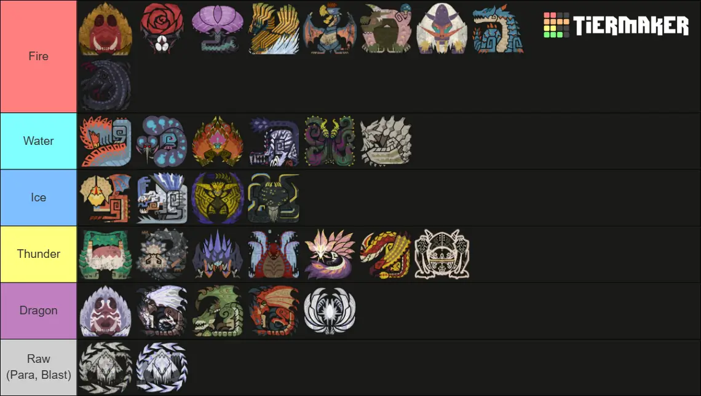
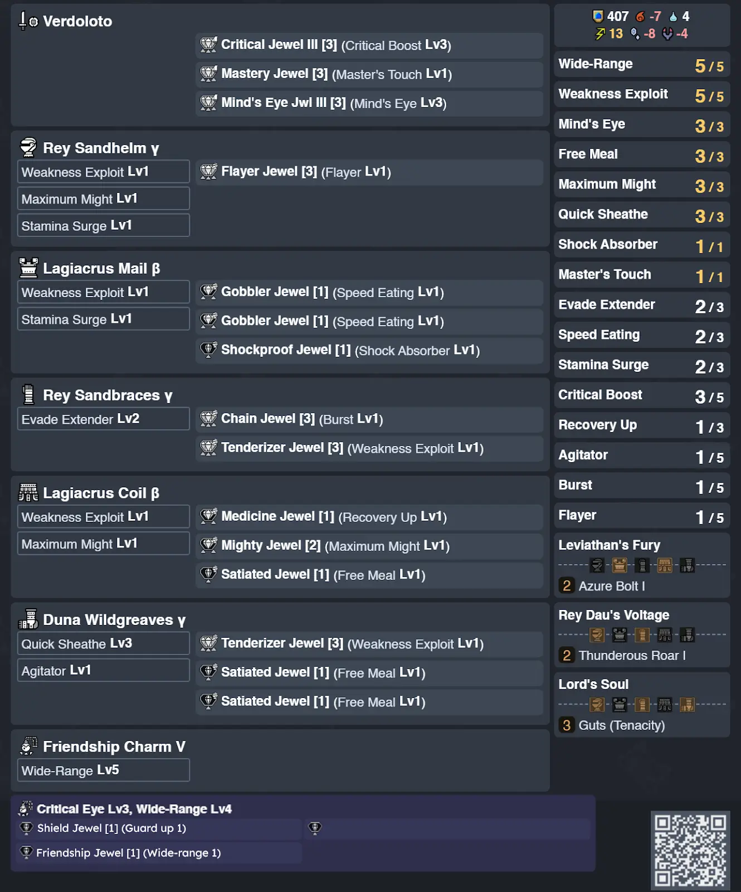
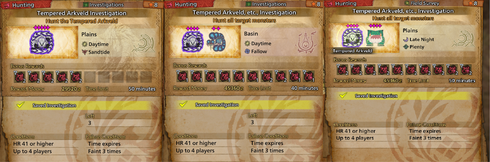
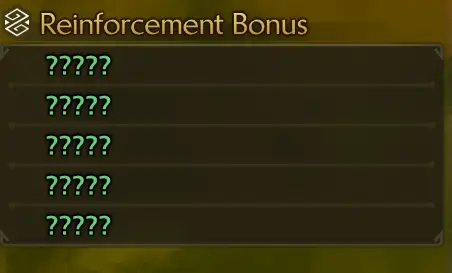
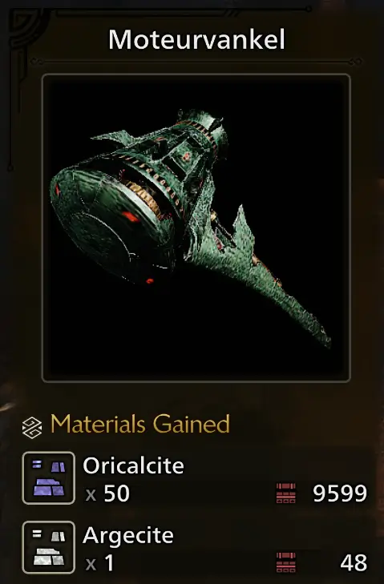

This document contains meta recommendations based on mathematical calculations and in-game testing, all recommendations align with what works and it’s possible in game.
- Author: BK (theorycrafting + math + doc editor)
- Contributors:
- Mopop (theorycrafting + math)
- PokerDew (theorycrafting + progression sets + doc editor)
- HungryDave (theorycrafting + doc editor)
- Collaborators:
- Visby (gameplay guide tech contributor and moveset flowchart)
- dtlnor (datamining)
- T3h Phish (banner image)
- Wiggler Project
- Mathalos
If you have any comments, suggestions or questions, feel free to message us on Reddit or Discord:
- BK (Reddit: /u/dragonbronze, Discord: __BK__)
- Mopop (Reddit: /u/MOPOP99, Discord: mopop)
- HungryDave (Reddit: /u/DaveTheHungry, Discord: HungryDave)
- PokerDew (Reddit: /u/PokerFace-XI, Discord: pokerdew)
We all are busy with our own schedules in real life, but we will do our best to respond to queries in reasonable time.
If we do not respond, please send a DM to PokerDew specifically, and he will answer your queries the best he can.
Please remember to be kind, respectful, and patient with your fellow community members! This work is done with none of the authors/contributors receiving financial compensation.
Math was done by BK and Mopop independently and then cross-checked, sets were optimized using Armor Set Search.
For the sets, please find attached BK’s math sheet (Google Sheets). It contains frame data for most of the relevant SnS DPS rotations, DPS analysis, build recommendations, matchup calculations, etc. The math sheet has been tested in the field to ensure that the damage formulae used results in the actual damage numbers seen in-game. For more details on how this is done, please refer to the sheet.
Set recommendations are based on Lateral Combo > Spinning Reaper > Amped Charged Chop DPS, as well as sustained loop (e.g. Lateral Loop, Chop Combo) DPS to a certain extent.
| Importance | Skill, Level, (Abbreviation) | Notes |
|---|---|---|
| 1 | Weakness Exploit 5 | Crit, even when nerfed from World and Rise, is still our strongest damage amplification option, over boosting attack or elemental attack. Critical Boost is still a really strong skill even when divided into 5 parts. WEX 5 outperforms Burst 5 when we take into account Critical Boost and Master’s Touch. Maximum Might gives similar values to WEX but is more conditional. Changes to Maximum Might in Wilds let the skill stay active more often, as it now activates after 3s of full stamina and stays active through one dodge move (roll/backhop). Maximum Might is still worth using even when Perfect Guards cause it to deactivate. Black Eclipse and Antivirus adds on 25% more crit and is not hard to use (15% from clearing frenzy and +10% extra from Antivirus 3). |
| 1 | Black Eclipse (Gore set effect) + Antivirus 3 | |
| 1 | Maximum Might 3 | |
| 2 | Burst 1 | Burst 1 is a very efficient skill. SnS hits fast and often, and will have high Burst uptime. |
| 2 | Agitator 1 - 5 | Agitator at 70% uptime is comparable to Weakness Exploit, but Weakness Exploit is controlled by you hitting weakpoints, and the extra affinity from Weakness Exploit compared to Agitator helps with sharpness management off Master’s Touch, so we prefer Weakness Exploit > Agitator. However, for speedruns or certain monsters, where the Agitator uptime is very high, it is reasonable to swap out Weakness Exploit for Agitator |
| 3 | Burst 2 - 5 | Similarly to Sunbreak, Burst is a frontloaded skill. Most of the skill’s value comes from the first level (8raw/6ele), and subsequent levels only add about 2 - 3 raw and ele each, and that’s before uptime calculation. It’s still not too bad of a skill to max out, because at this moment we don’t have many good alternatives. |
| 3 | Flayer 1 | Flayer 1 does add essentially a mini Blast status effect to your weapon, which deals 140 damage every proc (and becomes increasingly difficult to proc each time). The damage from Flayer is basically a 1 - 2% damage boost (see this video (youtube, opens in new tab, timestamped) for math). It’s kind of interchangeable with Agitator or Burst 2 - 5. You can try it out and see which one you like. |
| 3 | Adrenaline Rush 1 | Take this over Agitator or Burst 2-5 if you find that you need to use backhops semi-often instead of Perfect Guards. |
| 4 | Coalescence 1 | This skill has poor uptime. It’s basically a third of a level of Critical Element, which already does close to nothing. You will only see this in sets because the armor has it. |
| 5 | Counterstrike | This skill can actually be really good if you get hit once every minute. If not, then we wouldn’t recommend using this. It does NOT trigger off Perfect Guards or Guards. |
| Variable | Convert Element | Convert Element’s value is based on how much a Convert Element set gives up compared to a normal set, as well as how many Convert Element explosions can be triggered. Hence, the value of Convert Element changes from patch to patch. Please see the Convert Element builds for a breakdown of how many explosions need to be triggered for Convert Element to be good, as well as whether such sets are good for the current patch. |
Fig. 2.1A - Offensive Armor Skill “Priority” | ||
| Importance | Skill, Level, (Abbreviation) | Notes |
|---|---|---|
| 1 | Crit Boost 3 | Critical Boost is still really strong even when divided into 5 parts now. It handily outperforms everything else point-by-point, even at lower affinities (50% for example). Our builds average around 70 - 90% affinity. For example, Critical Boost 3 outperforms Offensive Guard 3 + Element Attack 1. |
| 1 | Sharpness Management | SnS has no innate sharpness mitigation and burns through sharpness quickly, hence you need some sort of plan for sharpness management. Sharpness management is important, because sharpening during combat is basically a direct drop in your damage output (even if done opportunistically), and not sharpening is also a direct drop in your damage output. A detailed sharpness management discussion can be found in section 2.3.2 Sharpness Management. We will typically recommend Master’s Touch for comfort. |
| 2 | Offensive Guard 3 | 15% raw for Perfect Guarding is very strong. It’s still “weaker” than CB and sharpness management, but should be the next skill in line |
| 2 | Critical Boost 4 - 5 | Critical Boost is so strong for us that even the last 2 points of Critical Boost will still be better than the alternatives below at 3 points or 4 points (combined). |
| 3 | Attack Boost 1 - 3 | Got nerfed. We don’t really have the space to use AB 4 - 5 yet. |
| 3 | Critical Eye | Got nerfed, your sets generally have enough affinity between all the other crit boosting skills, such that Crit Eye point-by-point doesn’t help too much over the above skills. |
| 3 | Elemental Attack 1 - 3 | Elemental Attack is pretty good in Wilds. We’re not exactly an elemental weapon (we’re heavily raw-skewed despite being fast-hitting), but the values on Elemental Attack are good enough for it to be ranked here. |
| 4 | Critical Element 1 - 3 | As someone that worked on Sunbreak math, I find it funny that people keep posting about how they think Critical Element is glitched and does little to nothing. Critical Element hasn’t changed since Sunbreak, and has always been that bad. We only started to slot it in in Sunbreak because we have the slots to use it. Do not use this in Wilds either over the other skills above, Critical Element does close to nothing for you. |
| 5 | Poison Duration Up, Foray, Crit Status, Poison Attack | While status damage is non-negligible, it is also a very small fraction of your damage (typically around 5% on average). Status thresholds increase exponentially with every proc you do. Crit Status at level 3 for SnS is a 20% increase to status contingent on your affinity. Everyone already thinks Slugger is a horrible skill, you can think of Poison Attack and Critical Status similarly. Poison Duration Up is not Chameleos Blessing from Sunbreak. It now only extends the duration by 20% rather than 100%. We have many other skills that do more. Foray was bad in Sunbreak when we had Chameleos Blessing as the uptime was poor. This skill’s uptime can be better if you bring two Status weapons (e.g. Paralysis & Poison) and swap them around, but it’s still not great. |
| 6 | Charge Master, Airborne | No. |
| Variable | Mind’s Eye | For certain monsters such as Mizutsune and Gore Magala who have shitty hitzones in a lot of places, Mind’s Eye provides +30% damage which is quite good. |
2.1B - Weapon Skill Priority Table | ||
The endgame sets can be built at the earliest at HR51 if you have good decoration luck, refer to the progression guide otherwise. If you want to use the new charms, then it's HR100.
Charm info sheets via Wiggler group
[MHWilds] Amulet Tables & is this charm Possible Whylds edition - Make a copy! (Google Sheets, opens in new tab)
The first thing to know about the new charms is that the vast majority of them are not worth running over even your basic WEX2/Agi2 charms at this point:
The god charms are the below or equivalent:
These charms will be equal in many cases but OFG charms will typically be the most flexible option.
Current skill budget on HR armor is low, meaning that taking away armor skill points and exchanging them for weapon skill points turns out to be a bad trade right now.
You’ll need a god charm (literally perfect) to beat out current WEX2/Agi2 charms. Even then, the overall gain is minimal, about ~0.3% over the existing standard. That’s about 2 seconds saved in a 10 minute fight.
Again, if you do not roll literally perfect, you’re losing out on damage compared to the regular builds.
The odds of rolling perfect are absolutely abysmal (1/192,000).
[Attack Boost 3 / Weakness Exploit 1 OR Burst 1 OR Agitator 1] with at least 1 weapon deco slot
[Offensive Guard 3 / Weakness Exploit 1 OR Burst 1 OR Agitator 1] with at least 1 weapon deco slot
2.2.1A - My reaction when we have to actually recommend charms now due to new armor set in the future.
(this will be bad for those who cant mod the godcharm in)
A very important caveat about uptime assumptions is that different people have different uptimes for different skills. This depends on the player’s skill level and the monster matchup. The best way to get uptimes that are relevant to you, would be to measure the uptime yourself. This can be done via video analysis (tedious), or via mods.
The uptimes we cite here are based on generally good gameplay (e.g. huge focus on hitting weakspots, not getting hit too often, and using good combos). Speedrunners may have better uptimes, and new players may have worse. Because as set builders, we have to make assumptions and generalisations about skill level and monster matchups, these numbers are really just averages, and you may find that your own uptime for a particular monster differs significantly. Hence, if you want the actual uptime, measure it yourself.
SnS has no innate sharpness mitigation beyond using Shield attacks, and spends around 120 - 150 sharpness in 3 - 4 minutes, which is around the time a monster will change area.
Hence, sharpness management is essential.
For this guide, we will recommend Master’s Touch in general given that most of the sets have good affinity.
Razor Sharp + Handicraft is slightly inferior but will still work if you don’t have the Master’s Touch deco.
For more details on sharpness management options, see section 8.2 How to determine which sharpness skill to run.
First Slot: Meat as a base for food grants +2 Raw.
Second Slot:
Third Slot depends on Set and Location.
Ultimately, there is no stand-out absolute banger meal that will make a ginormous impact, so eating whatever is available or cooked by villagers or even just Meat is good enough.
The current consensus is to give it a Paralysis Weapon. Para is the preferred status over Sleep, as it doesn’t interfere with Agitator and we don’t have any big wake-up hits.
Cat unlocks extra abilities by doing its Side Quests, namely:
Frenzy activates at an MV threshold, but this threshold increases over the course of the hunt based on how many times you’ve already triggered Frenzy cure. My rough estimates are 450/550/650/750/850 (cap) MV. Of course, this could be wrong, and I’ll correct it as new information comes in, but for now this is my best guess as to how this skill works in Wilds.
A couple of things to note:
The uptime from Sunbreak was 30s pre-cure, 60s post-cure on average across a hunt.
Because in Wilds we now have Antivirus and increased MVs, we can calculate a new theoretical uptime:
Whiteflame Torrent and Flayer both work very similarly in terms of what attacks they can proc on.
Flayer now seems to work with more moves in TU1, as dataminers found that more attacks now have _UseSkillAdditionalDamage set to True.
Flayer/Whiteflame Torrent does not currently work with:
Whiteflame Torrent works as follows:
Scorcher alters the damage of Whiteflame Torrent..
At base, Scorcher activates similarly to Whiteflame Torrent.
Because SnS can hit fast, we can typically remove checks every 3 - 4s when we’re doing our sustained damage rotations.
We can assume the average time to remove a check is 3.5s for good play.
For Scorcher 1 + Whiteflame on an average 20 eHZV:
For Scorcher 2 + Whiteflame on an average 20 eHZV
We know our theoretical DPS on monsters already.
7 more damage per average of 10.5s in this case would be about:
However, these DPS numbers are theoretical and most of the time your actual DPS is going to be far lower due to downtime, getting hit, etc.
Let’s take 3* Tempered Arkveld with around 24K HP. If you kill Tempered Arkveld in 5 minutes, you’re dealing about 80 DPS, and if you kill Tempered Arkveld in 7.5 minutes, you’re dealing about 53.3 DPS.
Whiteflame Torrent is actually pretty powerful, and Scorcher is pretty good when paired with Whiteflame as well.
Of course, the caveats of these calculations would be:
But overall, Whiteflame is a good skill.
Convert Element triggers when you get hit by enough elemental attacks (varies from matchup to matchup?). Notably, Guard and Perfect Guard still count as getting hit for Convert Element to proc.
Once it procs, for 2 minutes, you gain the following effects:
The first part of the effect is not very significant, especially considering that the SnS is a raw-centred weapon (most of our damage comes from raw damage [85 - 90%], even for pre-nerf Corrupted Mantle loops where the elemental damage only topped out at 15 - 20% of our damage).
The second part of the effect is the notable part of the skill.
It seems to build up as a status, meaning that it gets exponentially harder to proc the explosion the more times you have already triggered the explosion.
Because Kiranico status numbers are inaccurate for quests and we don’t have a robomeche equivalent resource for status like we do in Rise and World, it is extremely difficult to quantify the general contribution of Convert Element across monsters and across sets. The main way to test Convert Element’s contribution would be to bring in a damage overlay mod to a specific hunt, but you would get results that only apply to that specific hunt, and to the way you played in that hunt.
Until we get actual status numbers, we will only provide Convert Element sample sets and describe the damage differential between these sets and the general sets, as well as how many procs you need for the Convert Element sets to beat out the regular sets.
Bladescale Honing is a new skill introduced in TU2. It is present on Seregios weapons.
It shares the same activation requirement as Adrenaline Rush (it activates on a successful roll/backhop through an attack, but not on Sliding Swipe).
Once activated, it provides 6 units of what we call “Seregios sharpness”.
Unfortunately, for SnS, 6 units of sharpness is too little for practical use, considering how fast we burn through sharpness in general. The gain from 1.32x (white) to 1.4x is about 6% increase in damage, meaning that when you have Seregios sharpness, the Seregios weapon goes from 220 base raw to effectively 233 base raw. That’s still not wholly competitive, especially when we take into account the weapon’s poor white sharpness count.
Razor’s Edge is the Seregios set skill.
This skill is not strong enough to justify using Seregios armor over Rey Dau armor. The predominant SnS playstyle currently also does not have many chances to activate Adrenaline Rush, because Perfect Guards and Sliding Swipes are preferred over Rolls and Backhops to maintain Maximum Might.
Convert Thunder Resistance is the Lagiacrus SnS weapon skill. It grants bonus display thunder element to the weapon equal to 40% of your armor’s Thunder Resistance. For the current meta set (3pc Rey), which has 23 Thunder Resistance, that would be equal to 5.75 thunder ele (multiply by 10 to account for in-game element bloat).
Azure Bolt is a skill that works very similarly to Flayer/Whiteflame Torrent. It has an internal cooldown (likely 3 seconds, similarly to Flayer/Whiteflame).
You need to accumulate about 100MV damage and the hit after the 100MV triggers the explosive damage (ignore hitzones and your raw)
Once you accumulate enough MV damage, the skill procs:
If we want to calculate a theoretical uptime for Azure Bolt, it’s not too difficult.
This is as the uptime of Azure Bolt is mostly fixed within a certain range and the time taken to activate it doesn’t change the uptime of Azure Bolt too much.
We assume from Frenzy activation (600MV in 30 seconds, can be done faster) that you clock about 120MV in 6 seconds, or 20MV/s.
We know that there is an internal cooldown so if you take 6 procs to activate Azure Bolt that pulls up activation uptime to 20s. Based on some testing, Azure Bolt typically activates much faster, so let’s say 20s is an edge case.
If you’re fast and lucky (maybe you land some hard hitting attacks and proc it within say 2 procs), then you could potentially proc it in 6s or so.
So, to calculate uptime for the two edge case above:
For calculations, I think it’s quite safe to assume 30% uptime.
As for the damage contribution of the explosion, it’s about 45 flat damage per 60s or so. That’s 45/60 = 0.75 DPS bonus. Compared to Whiteflame, which can contribute upwards of 10+ bonus DPS, Azure Bolt’s DPS bonus is mostly negligible. In calculations, we add about a 1% bonus damage multiplier to account for Azure Bolt’s impact on DPS, because the typical good player will hit around 60 DPS (based on experience with DPS tracker mods in game).
Dark arts:
This is a 2 Piece armor set bonus skill for the Normal Omega armor (It’s Bale!) This skill works as follow
as for omega resonance:
So like calculation wise the uptime of both of these skills are “50%” assuming you are multi with other people and they don't ruin your quests to stack or not to stack. We could make an optimization for multiplayer based builds but for general sake and the reliance of a teammate make this really unappealing. (You lose dps skills 2)
Cats max out at level 30.
For the uptime, we will use a slightly more conservative (and nicer to work with) estimate of 70%.
Read this first: This is how Flayer doesn't work (Reddit: r/MonsterHunterMeta; opens in new tab)
The game assigns a random number of “checks” at the start, between 1 and 3.
Scorcher 1 w/ no Whiteflame Torrent
Scorcher 2 w/ no Whiteflame Torrent
Scorcher 0 + Whiteflame:
Scorcher 1 + Whiteflame:
Scorcher 2 + Whiteflame:
Hence:
Hence, we deal about 50 more damage every 7 seconds, give and take. This increases DPS by 7.14
Let’s assume Rey Dau hitzones (60:20) and we’re using our sustained damage combo Lateral Loop.
On a typical Verdoloto Ice build, we get 179 theoretical DPS on Lateral Combo > SR > CC2, and 160 theoretical DPS on lateral slash > Return Stroke > Roundslash looped.
The nice thing about the internal cooldown of Whiteflame is that it doesn’t matter what you do in those 3 seconds or so. You could be not attacking and Whiteflame will still operate as per usual. Hence, the actual DPS contribution of Whiteflame is going to be similar regardless of your actual damage output, unless you’re doing something wrong (aka not hitting the monster once every 3 seconds for the majority of the fight).
If we assume that Whiteflame’s DPS +7.14 remains similar regardless of your actual damage output (barring extreme cases), then:
Whiteflame Torrent becomes more powerful the less damage you deal, because across a range of DPS, it will contribute similarly.
After the 2 minute effect, it goes on cooldown for 1.5 minutes.
It does not seem to scale off:
Generally if we say it takes about 10s to activate, then it’s about 30 - 33%.
Hence, you can see that the uptime generally ranges from 28 - 35%, even taking into account large differences in activation time.
This range is negligible in practice.
That’s about 4.5% effective affinity for the 2pc set. In contrast, Gore 2pc gives 25% * 0.7 = 17.5% effective affinity for the 2pc. We can see that the effective affinity bonus for Azure Bolt is actually quite small.
When you have Red HP, Increase element by x1.25 Unlike Strife in sunbreak where it's based on the amount of red hp this is fixed. We can’t exactly use this skill due to us having like no way to get resentment reliability at all.
Greatsword players will probably like this.
This is a 2/4 Piece armor set bonus skill for the Savage Omega armor (not Bale!) The skill works as follows
effects initialize but do not apply in solo
works when someone joins, deactivates when they leave
10/20 Raw for far
20/40 affinity for close
randomly chosen effect at start of hunt, alternates every 90s based on quest timer.
I could make a meme build around this but it feels kinda forced - PokerDew
The following sets are ordered from strongest to weakest.
They do NOT assume Might Seed, Demon Powder, Mega/Demon Drug or specific food skills due to how annoying they are to farm. They DO however assume the Power Charm, obtained by doing the Double Ajarakan Arena quest (“As Gatekeeper”) from Rex’s Questline in Suja.
The current meta revolves around Artian Weapons for almost all cases (Raw/Status and Element).
You should make an Artian weapon for each element.
For the Artian raw weapons, even though they have less status than the craftable weapons, they still outperform the craftables overall. All the statuses are fine to use. Blast and Poison are very similar in output.
The current recommendation for crafting is:
- Blade/Tube/Disc of the same element/status and all three with Attack Infusion
- Reinforce with 3 Raw/ 2 Sharp. 4 Raw/1 Sharp will be slightly stronger (<1%) but will be slightly less comfy to use now due to inflated monster HP that is significantly higher.
Something to take note of is that Artian element weapons outperform all craftables even before reinforcement. Of course, you still want minimally 1 sharpness augment to boost the white sharpness from 20 to 50, because 20 sharpness is almost unusable, but don’t worry too much that your weapon is 3 Ele/1Affinity/1Sharpness or some other result, because they’ll still be stronger than the craftables:
- At max roll (4 Raw/ 1 Sharp), they outperform by 5-10% depending on element.
- At minimum roll, they may be equivalent or outperform by 3 - 5% depending on element.
You only really need to chase the max roll if you’re a speedrunner aiming for a record, and even then, you will probably want to perform the calculations yourself on which roll is most suitable for your script.
 Open image in new Tab Fig. 3.1.1B - This isn’t the best roll Artian weapon can offer but it’s already solid.The current recommendation for weapon decorations is:
- Critical Boost 3
- Offensive Guard 3 / Ele Attack 1 (for element) OR Handicraft 1 (for raw/status)
- Master’s Touch
Right now, Artian element weapons with the below sets basically outperform the Artian raw weapons on everything except for the most raw-skewed matchups (e.g. Arkveld’s 0EHZV chainblades). Even then, element weapons lose less than 1% compared to raw weapons. We would recommend element weapons in basically all cases.
I would highly encourage you to just craft an Artian weapon and reinforce it, because an almost no-reinforcement Artian weapon (with 1 sharpness reinforcement) will still beat out all the options listed here.
The purpose of this section is to provide recommendations in case you’re still grinding out the Artian parts and you want to know what’s the next best alternative.
They do NOT assume Might Seed, Demon Powder, Mega/Demon Drug or specific food skills due to how annoying they are to farm. They DO however assume the Power Charm, obtained by doing the Double Ajarakan Arena quest (“As Gatekeeper”) from Rex’s Questline in Suja.
The current recommendation for weapon decorations is:
- Critical Boost 3
- Offensive Guard 3 / Ele Attack 1 (for element) OR Handicraft 1 (for raw/status)
- Master’s Touch
The current recommendation for each element is:
- Fire: Melting Point (Guardian Rathalos)
- Water: Sandsea Katduva (Balahara)
- Kurenawi Ougi (Mizutsune) if you don’t guard often enough to use OFG3 well
- Thunder: High Lagia Sword (Lagicrus)
- Ice: Precipice Mateptro (Jin Dahaad)
- Dragon: Blazing Mikal (Zoh Shia)
Zoh Shia’s weapon performs very similarly to the Artian Dragon weapon with god rolls (4 Attack/1 Sharpness). The Verdoloto will edge out Blazing Mikal slightly for speedrunners, while for casual players (e.g. 8min+ for Tempered Arkveld 3*), the Blazing Mikal will start to perform better.
For combos to use to proc Whiteflame, as long as you’re not spamming Perfect Rush on repeat, you’ll be fine. Because of how Whiteflame works, it only checks every 3s for a valid attack. Most of our normal attacks proc Whiteflame, so there’s basically no issue with triggering Whiteflame. You should still use Spinning Reaper and Charged Chop as per usual.
For Zoh Shia, the two decorations recommended are:
- Master’s Touch
- Critical Boost 3 (you get slightly more damage with Critical Boost 3 than Offensive Guard 3/Dragon Attack 1)
Lagiacrus’s weapon performs very similarly to the Artian Thunder weapon with god rolls (4 Attack/1 Sharpness). It is slightly weaker (3-4%) compared to the Artian Thunder weapon, and will come very close (1% weaker) on very elemental-skewed matchups (e.g. 40:20 raw:ele ratios). These numbers are calculated using a Thunder element resistance of 23 (from 3pc AT Rey Dau + Zoh Shia Chest + Lagiacrus Boots), for the Convert Thunder Resistance skill of the Lagiacrus weapon.
For Lagiacrus, the two decorations recommended are:
- Master’s Touch
- Critical Boost 3 (you get slightly more damage with Critical Boost 3 than Offensive Guard 3/Thunder Attack 1)
The current raw recommendations are:
- Blast: Ajara-Subinda
- Poison: Queen Rapier
- Paralysis: Lala Acanthopelm
The main set ideas + Conclusion
- Element focused without crit
- WEX 0 Burst Boost 2 Burst 5
- WEX 1 Burst 5 Gore 4pc
- Crit focused
- WEX 5 Gore 4pc Burst 1 Agitator 2
- WEX 5 Gore 4pc Burst 2
- WEX 5 Gore 2pc Zoh Shia 2pc
- WEX 5 Convert element 1/3
- WEX 5 G. Rathalos 2pc Gore 2pc (For Whiteflame build)
- WEX 5 AT Rey 3pc with Zoh chest and Mizu Boots
- WEX 5 AT Rey 3pc with Zoh chest and Lagiacrus Boots
- WEX 5 AT Rey 3pc with 2pc Lagi
- WEX 5 2pc Gore and 2pc Lagi
- WEX 5 4pc Lagi
- WEX 5 AT Monster 3pc with and without Zoh shia 2pc (head+chest)
- WEX 5 3pc Rey 2pc Odo (Burst Boost 1)
- WEX 4 4pc Odo (Burst Boost 2)
- LP5/Agi5
The overall conclusion was that crit builds outperformed non-crit builds, and that giving up WEX to slot in more Burst was also not optimal for damage. This was because of Crit Boost still being a very strong overall option in the weapon deco slot.
All sets use Maximum Might, Wilds changed how the skill works granting a small grace period where the skill won’t be deactivated even after performing a roll or consuming a small amount of stamina, on top of that most sets have open Lv2 Slots and there isn’t a lot of competition for those slots, all of this results in Maximum Might being a strong choice for all sets, see the related gameplay guide for more information on how to use Maximum Might effectively.
We took a look at Burst Boost as of the Aug 13 update, but it was still not worth it over the typical best set.
ANNOUNCEMENT: Errata hells
(TU 3.5 Update) AT Nu Udra forces its way into the meta by providing us an easy way to fit Counterstrike 3. Counterstrike 3 grants a massive +25 raw for 45s when you get hit by an attack that knocks you back (not counting when you block). Since SnS doesn’t have an offset attack, you will take some damage when proccing Counterstrike. The new meta sets mainly trade the inconsistent points of Latent Power (1-3) for Counterstrike 3. The potential damage gained is 1-8% depending on Counterstrike uptime. - HungryDaveso uh turns out now theres this damn 2P lagi build now which solve all the aforementioned fringe case of LP affinity issues. so uh lmao enjoy
and yes i have to Errata so many damn things. you better enjoy seeing me suffer from errataing so much for this also thanks to all of you who submitted me the resentment build it was a bait anyways to see what you guys are coming up with the meme/Anti AT Nu builds (Dont get that much hope up on the latter though). -PokerDew
explanation can be found in like somewhere in the tables of content highlighted in cyan The following sets are ordered from strongest to weakest or conditional.
- Armor: AT Rey Dau / AT Nu Udra / AT Rey Dau / Lagiacrus B / Lagiacrus B
- Charm: Get whatever with at least Agi1/WEX1/Burst 1 and some decent slots or use 2agi charm
- Decos: Burst x1, Maximum Might x1, Agitator x3, WEX x1, Counterstrike x1
- Weapons: Any Artian Meta Raw & element or craftables.
(BLOCKING DOES NOT PROC CS) the dps is better by 3~8% (as in 1-100% uptime though idk if it's linear or expo). Depending on how much CS uptime you had.
Do you love Errataing? I am. So anyways this build is the better improved version of the main DPS build with minimal losses (That being some LP Thanks burst for taking the LP slot) You lose like no dps by playing well and get more dps simply for being “bad”
Also erm yeah I rewrote this whole thing thanks to me forgetting burst 1, Enjoy.
- Armor: AT Rey Dau / AT Nu Udra / Lagiacrus B / Lagiacrus B / AT Uth Duna
- Charm: Get whatever with at least Agi1/WEX1/Burst 1 and some decent slots or use 2agi charm
- Decos: Burst x1, Maximum Might x1, Agitator x2, WEX x2, Counterstrike x1
- Weapons: Any Artian Meta Raw & Element or Craftables.
(BLOCKING DOES NOT PROC CS) the dps is better by 3~8% (as in 1-100% uptime though idk if it's linear or expo). Depending on how much CS uptime you had.
Do you love Errataing? I am. So anyways this build is the better improved version of the main DPS build with minimal losses (That being some LP Thanks burst for taking the LP slot) You lose like no dps by playing well and get more dps simply for being “bad”
Also erm yeah I rewrote this whole thing thanks to me forgetting burst 1, Enjoy.
This thing basically ruined all the whole point of the 2lagi set and the generic 3AT mons set in one fell swoop if for whatever reason. GG capcom you make me agitated even more so somehow
Hey so uh another more errata a bit, You drop 1 2 flex slots for like more average crits all around, this build is only worse than the main one by the no latent power.
MT charm is technically the best for us im just lazy to include because OFG3 charms are much much more common than MT
- Armor: Zoh Shia (Numinous) B / Zoh Shia (Numinous) B / AT Rey / AT Rey / AT Uth Duna
- Charm: WEX 2
- Decos: Burst x1, Maximum Might x1, Agitator x1, WEX x3
- Weapons: Any Artian Meta Raw & Element or Craftables.
This set is worse than the main meta set by <~8%. This set gains the Zoh Shia’s set bonus Super Recovery, which provides passive health recovery (1hp/2s). Super Recovery along with Guts from Lord’s Soul provide additional survivability for more comfy hunts.
- Armor: AT Rey / Gore Magala B / AT Rey / AT Rey / Gore Magala B
- Charm: Critical Eye 3, Agi/Burst 1 OR Agitator 2
- Decos: Agitator x3-4, Burst x1, Antivirus x2, Shockproof x1
- Weapons: Any Artian Meta Raw & Element or Craftables.
This build is for monsters with relevant Mind’s Eye hitzones (≤44 hzv), namely Gore Magala and Lagiacrus. The breakpoint for this build to beat the standard builds happens when about 10-20% of your hits land on Mind’s Eye hitzones. This means that if you hit Wex hitzones (≥45hzv) less than 80% of the time, then this build can beat other meta builds. Gore Magala and Lagiacrus especially have many hitzones where you will end up hitting due to how they behave during the fight.
Alternative build (mhwildshub, opens in new tab) that adds Counterstrike 3 but loses 1-2 Latent Power, Evade Extender 2, and Evade Window 1. Requires a good charm (Mastery/Mind’s Eye 3/Crit Eye 3) with armor slots to fit the 3rd Sane jewel.
Simply match the element of your weapon with the monster, all Artian weapons have the same stats so there are no weird situations to take into account.

Open image in new Tab
Fig 4.0a - They actually made the Elemental Hitzones good!
For Arkveld you might feel inclined to use Raw over Dragon (Arkveld chains when charged up are weak to Dragon), in case you use Raw you can opt for Poison/Blast or Paralysis.
Our damage is still mostly on the raw part, Artian stats are basically the same and adding extra dmg from ele is nice, especially in some matchups where it's extra weak.
- Armor: AT Rey / AT Nu Udra / G. Arkveld B / Lagiacrus B / AT Uth Duna B
- Charm: Get at least Wide Range 4 on the charms or use Wide Range 5 charm
- Decos: Burst x1, WEX x1, Agitator x2, Counterstrike x1, Max might x1, Add as much comfort to the build as you want
- Weapons: Any Artian Meta Raw & Element or Craftables.
The Wide-Range build has improved yet again! This time adding Counterstrike 3 without losing damage skills. With Counterstrike 3, you gain +25 raw for 45s when you get knocked back by an attack. With speed eating you can heal quickly and get right back into action with a significant raw buff.
Alternative build (mhwildshub, opens in new tab) using Lagi 2P to trade 1 Agitator for Evade Extender 2, Mirewalker 1 and Leviathan’s Fury set bonus. Evade Extender can be good or bad depending on the matchup.
I did say there is nothing changing with the meta, not alternative (also yes wide range somehow moved up to alt now not meme) lol. Anyways, Omega requires a new way of making wide range sets and people seemingly can’t read and find the not godcharm edition so I decided to just compromise for this instead. Omega forelegs are Mind eye’s able and backlegs+Head are WEX, Flayer 1 is there to make wounds faster for the Pantokrator phase.
Do Not Stand and Heal, only do so when they are in threat. This build actually dish out REALLY good damage.
 Open image in new tab
- Armor: AT Rey Dau / Lagiacrus B / AT Rey Dau / Lagiacrus B / AT Uth Duna
- Charm: Critical Eye 3, Wide range 4, W1-A1-A1 OR Wide-Range 5
- Decos: Burst x1, Weakness Exploit x2, Flayer x1, Recovery up x1, Speed eating x2, Free meal x3, Shockproof x1
- Weapons: Artian Element (preferably thunder for Omega) you don’t need fire for Nerscylla in Phase 3
- Build is made specifically for Omega If you wanted the old one for general use its here
BUT The survivability and the support you can do is quite there, although i do have to say whenever it does the Mustard Bomb, PLEASE move away so it doesn’t corner or block people. Pick up the shield gen whenever the partbreaks (cant slinger grab it btw have to unsheathe pick up by hand) OR when it does the laser on its face, Focus strike it. Lastly, whenever the face has wounds. When it slams repeatedly in Pantokrator phase after the 3 slams the legs are focus strikeable for a free topple. Larboard is on the left side of Omega face, vice versa. In Savage after Phase 2 Jin zone it’ll be 360deg now.
 Open image in new tab
Open image in new tab
 Open image in new tab
Open image in new tab
THIS IS TOP VIEW BTW LARBOARD IS ALWAYS ON OMEGA’S LEFT SIDE VICE VERSA
 Open image in new tab
Open image in new tab
Also, here is a bonus. HP value for each phase + enmity modifiers.
MRV Missile if you don’t have shield just sheathe and run there's no point in guarding unless you are lance.
Damage isn’t really the concern on winning against Omega, its survivability.
Also the blue laser needs guard up, still advised to just dodge because guarding it still chips you a ton.
This set is meant to be very optimized for killing AT Uth Duna only. So don’t use this as a general set!
(maybe you can use it on other thunder weak matchups that isn't Mizu)
- Armor: Lagiacrus B / Numinous (Zoh Shia) B / Lagiacrus B / Lagiacrus B / Lagiacrus B
- Charm: Weakness Exploit 2
- Decos: Burst x1, Weakness Exploit x1, Agitator x1, Earplugs x2, Thunder Res x3
- Weapons: High Lagia Sword (Lagiacrus)
See Chapter 2.3.9 for more details on Convert Thunder Resistance.
This set is meant to be very optimized for killing AT Uth Duna only so don’t use this as a general set! (maybe you can use it on other thunder weak matchups that isn't Mizu)
Anyways, The set made to maximize the amount of thunder ele you can squeeze from Convert thunder res. and ignore any comfort options that aren't deemed optimal for AT Uth duna. Don't forget to eat village food for maximum thunder res! Earplugs 2 is enough for AT Uth Duna roars so the empty 2 slot can be CS or EW. Azure Bolt damage is still negligible, but contributes more to the hunts due to thunder weak matchups now.
Now for a quick FAQ and rundown on the fight itself. The gameplan will mostly be Chop combos -> Spinning Reaper -> Charge chop on forearms, PR finisher is plunging thrust as Uth head hitboxes are small and the body hitboxes are very big. Lateral combos are still used when it doesn’t move around. Expect to do a shorter burst of combos because she will keep moving alright.
- Q1: What about the water waves? A: Go diagonal, Ride the waves towards Uth duna. and always prepare for a followup.
- Q2: Where to hit AT Uth duna? A: Try to hit all limbs from the sides. They are good hitzones and have guaranteed tempered wounds too.
- Q3: What to do with the long aerial jumping slam? A: Here are the hurtboxes of the moves (streamable, opens in new tab). It's uh pretty big you just try to dodge the 1st and backhop or sliding swipe the 2nd slam as the AoE is only 8 frames (@60fps). flashing works but for 3 times before she is just completely immune to it.
- Q4: Are there any good run examples to use of? A: Here are my very casual hunts on it (youtube, opens in new tab), and here is BotanAnne speedrun (youtube, opens in new tab). Try watching both and don’t trash my gameplay that much. I never advertise myself as a very good hunter to begin with! -PokerDew
This section is mainly written by PokerDew. Please address any feedback or suggestions to PokerDew.
Do you want to actually use Seregios (will now be called as steve) builds?
Ok so gameplan wise, You Ę̸̊v̶̡̅a̷̦̽d̶͓͐e̴̞͂ ̴̬̄ẇ̴̗h̴̢͆ǐ̷͉l̸̞̑e̷͔̕ ̸̻̕a̶̼͝ļ̵̈́s̵̝̍o̵̺͆ ̴̺͌g̵̗̀ḛ̵͊t̷͚̚t̷̰͐i̶͕͆n̸̤̓g̸̬̔ ̸̡̊h̴̤͋i̷̩̓t̴̳͐ ̵̜̇a̷̮͋š̸͇ ̶̭̿ẃ̶͈ę̴͆l̴̨̾l̶̡͊ ̷̩͋t̴̮͐o̴̧͆ ̷̜̐b̶͍͝ò̵̫t̴̖̐h̵̹͐ ̷͇̐ṕ̷͇r̴͕̃ö̵͖́c̶̜̎ ̴͔̈́Ç̶̉o̶̦͐ű̵̘n̴̘̓t̶̗̾e̵̡̕r̶̀͜s̷̬̊t̶̡̒ṙ̶ͅi̵̡͛k̴̺̊e̴͇͆ ̶͒͜ȃ̸̡n̴͉̎ḏ̸̆ ̶̖̈́A̵͓̔d̴̪̿r̵͈͘ĕ̵̱ṋ̵̀r̸̜͠u̴̦̽s̶͍̓ȟ̷̢ and uh yeah btw theres also the ⬧︎♒︎♓︎♏︎●︎♎︎ ♌︎♋︎⬧︎♒︎ ⬧︎♒︎♋︎❒︎◻︎■︎♏︎⬧︎⬧︎ ♌︎♋︎■︎🙵♓︎■︎♑︎ because it works with steve sharpness too. I dont know how well the DPS is as this is basically a shitass idea I made with visby at midnight.
You can also just remove Counterstrike for evade window too if you want it to be more serious.
Thank you to Pilgrim from the Team leviathan who graciously gave us this builder again to actually display these builds in its full glory as both gamecat and wilds builder hub don’t have a way to display these new armor yet
and if you don’t have godcharm just use normal Wide Range 5. For His project Math hunter isn’t done yet but it’s getting there, eventually the website will be open for public use soon.
Ok funny shit I wasn’t going to make this but lmao I had to do it to em anyways so uh the skill itself is explained in section 2.3.10. But It could be good uh ish? The reason why Wide range is here is simply due to Idk what else to put on and you have 3(4) Free lvl 1 slots to do whatever you want, have fun!
What the fuck???? Capcom actually fixes their shit for once???? Now I have to remake blango again???
But then again they still didn’t buff the dmg number of it at all lmao it's still +3/6 but the duration is around 2min ish methinks.
Do you want to Mine and craft while having some benefits of actually gathering up ore for uh reasons?
For every ore you mined depends on rarity you’ll get 10/20/30 raw for 1min 30 sec after you picked up the ore.
[Non Region one] just speedrun mine and get as much raw as possible and rush to the monster and do as much dmg as possible in the window, THEN ACTUALLY USE WEAPON SWAP to your normal raw SnS lmao.assuming you moved between regions.
[Region one] If not there is a funny strat where you pre mine for the +90 Raw right away and do the quest in the same region and try to upkeep the uptime as warping camp dont reset it, it just works.
Have you ever wanted to become the evasion evading man?
Do you really love the Evasion mantle and want a playstyle around it?
Well we got it here fellas enjoy your evading mantling.
For more details, see section 2.3.8 Bladescale Honing. Open image in new tab
Open image in new tab
I will eventually return mizu set later im lazy to make the docs longer as is
(The real reason Wide range is here is simply due to usually the skill cycle every 90 sec quest timer based and losing +10 Raw would be kinda bad and you can’t Unstack yourself anyways might as well just take wide range and eat might seed to get it fixed)
They make it so that it stands as a unique dmg buff now which is nice albeit the stats they give is pitifully low.
Do you wanted to like well idk, unironically use the weapon swap mechanics for once (not you LBG)
WELL Here is the build for you
It is refreshable by very ore you picked up maximum up to 180 -> 270 raw (Will reset when swap weapon or duration ran out)
the gameplan now have two plans the Regional one and the moving around region one (Maps)
Weapon and armor changes:
TU1.5 - AT Rey Dau armor has been released
TU1.75 - (SF6 collab) Akuma has been released
On average you’ll sit at around 400 defense. Your dmg reduction is 83.3% with the +30 will be 430 defense or 84.3% its 1% improvement to the dmg reduction%. 1-(80/80+def) is the formula. ITS BASICALLY DEFENSE BOOST 3 BUT CONDITIONAL.but no guts bonus for seemingly no reason other than status quo in upgrades. capcom cooked this update for this fr fr. (LAYERRRRRS) Erm Errata a bit. IT IS an upgrade if you consider future armors.
- Q: What about Flayer, why don't we have it?
- A: Please see this reddit post (opens in new tab) on how Flayer works (and doesn’t work). Because wounds have a wound lockout time of 20s on a BY PART basis, Flayer only has ⅓ chance to activate for wound damage, and Flayer has an internal cooldown (meaning it does not trigger on all hits of a fast attack string), Flayer does not actually help that much in making more wounds. We do suggest Flayer 1 for the flat damage proc as an alternative to Agitator or Burst 2-5. For Partbreaker, it also seems to be bugged and doesn’t work sometimes.
- Q: How about Scorcher by itself or Elemental Absorption?
- A: Scorcher by itself (without Whiteflame Torrent) and Elemental Absorption are bad skills that don’t contribute much to damage. It’s a numbers issue.
- Q: How about Binding Counter?
- A: Binding Counter is actually a decent skill but it’s more powerful when the hunt time is short, so that the uptime can be maximised. Because Power Clash works like a status, the first Clash is easy to get, the second one comes after some time, but the third Power Clash does not come in a reasonable amount of time. Speedrunners can get more value out of Jin Dahaad’s set skills which include Agitator and Resuscitate alongside Binding Counter (because of how short speedruns are, those skills have more value as they will have better uptime).
- Q: How about Resuscitate (from Lord’s Fury - equipping 3 or more pieces of Apex monster armour)?
- A: As of 10/3/25, Resuscitate has been patched to no longer work post-Frenzy Cure. We’re hence not going to recommend any Resuscitate sets, and any such sets you see using this should be presumed to be outdated.
- Q: Akuma?
- A: No I am not making akuma builds go make your own for it. - PokerDew
- Q: There was a glitch about SnS having infinite plunging thrusts. How did you do that? [it has been fixed by capcom] as of 16/04/2025
- A: Here is how you do it (youtube, opens in a new tab)(Also It’s super weird and janky with other weapon/terrain interactions 10/10 bug tho) and it might get patched maybe soon? But it was practical enough to do runs with it, go wild - PokerDew
The Materials to craft Artian weapons are obtained from HR41+ Tempered Investigations. Good investigations look like this:
 Open image in new tabFig. 8.1A - Investigation Examples
The three materials needed to craft a SnS are 1x Blade 1x Disc and 1x Tube.
To craft an Artian SnS, talk to Gemma and select the Forge Artian Weapon option.
Next, select the parts:
Fig. 8.1B - Crafting Menu
Each part has an Element (or a Status), and either Attack or Affinity associated with it. Using two of the same Element/Status makes the resulting weapon have that Element/Status. For a pure raw weapon you want to be using 3 parts all of different status/element.
Using the same element/status three times boosts the value a bit and is always encouraged.
Current Rarity 8 Artian Weapons have a base of 190 Raw and 5% Affinity, as well as 20 units of white sharpness.
They always have 3-3-3 slots.
The above example uses 3 Attack Infusions which means the resulting weapon will have 190 + (3x5) Attack and 5% Affinity.
The results thus work like this:
| Part, Element, Infusion | Part 2, Element, Infusion | Part 3, Element, Infusion | Result |
|---|---|---|---|
| Blade, Fire, Attack | Tube, Sleep, Attack | Disc, Water, Affinity | 200 Attack, 10% Affinity |
| Blade, Dragon, Attack | Tube, Ice, Attack | Disc, Dragon, Attack | 205 Attack, 5% Affinity 26 base dragon element |
| Blade, Water, Affinity | Tube, Water, Affinity | Disc, Water, Affinity | 190 Attack, 20% Affinity 28 base Water element |
| Blade, Paralysis, Attack | Tube, Paralysis, Attack | Disc, Paralysis, Affinity | 200 Attack, 10% Affinity 8 base Paralysis |
| Blade, Sleep, Attack | Tube, Sleep, Affinity | Disc, Poison, Attack | 200 Attack, 10% Affinity 6 base sleep |
Fig. 8.1C - Artian Crafting Examples | |||
Note that you cannot mix and match Parts of differing Rarity.
Rarity 6 and 7 Artian weapons are strictly not worth it.
After crafting comes Reinforcing. This is done via the “Reinforce/Dismantle Artian Weapons” Menu option at Gemma.
Pick the Reinforce option and the Weapon you want to reinforce:
 Open image in new tab
Open image in new tabFig. 8.1D - Upgrade Interface
Reinforcement Materials can be obtained by trading with the secondary forge in Azuz. Trade your unneeded Monster Materials and Licenses for Oricalcite.
It takes 10 Oricalcite per roll, for a total of 5 rolls = 50 of those ores.

Open image in new tab
Fig. 8.1E - Reinforcement Bonus
Each “Reinforcement” adds 1 of 4 possible rolls on the weapon. These are:
+5% Affinity; +3 Element/Status (bloated to 20); +5 Raw; +30 Units of Sharpness.
Depending on what you are building for, you may want differing rolls.
If you get a Bad roll, go to the Reinforce/Dismantle Menu and select Dismantle.
 Open image in new tabFig 8.1F - Dismantle Menu
Dismantling an Artian weapon returns the ore used to Reinforce it back to you. You lose the parts used to craft it, but the ores are one less worry you need to have.
In this game, sharpening with a whetstone got buffed to occur stage-wise or in “cycles”.
Each sharpening cycle restores 20 sharpness (if you’re not missing a lot of sharpness).
- Time taken to:
- - Take out the whetstone/whetfin from guard, and sharpen 1 cycle: ~1.4s
- - Take out the whetstone/whetfin from guard, sharpen 1 cycle and then roll to cancel the end animation: ~2s
- - Take out the whetstone/whetfin from guard, and sharpen 2 cycles: ~2.3s
- - Take out the whetstone/whetfin from guard, sharpen 2 cycles and then roll to cancel the end animation: ~2.9s
Monsters typically run away after 3 - 4 minutes barring some unique circumstances such as Turf Wars or dying state.
We will typically need about 120 - 150 sharpness per 3 minutes. This depends on the combos you do, how much sharpness they consume and your uptime on the monster.
MT at 70% affinity grants basically 2.26x your original sharpness. At 80% affinity, it grants 2.76x your original sharpness. On a base of 50 sharpness, and considering the average affinity of an Artian set, that’s about 130 units total.
Razor Sharp + Handicraft on a 50 sharpness weapon gives about 70 sharpness units, so 120 units total.
Hence, MT slightly edges out Razor Sharp + Handicraft.
- Every time you sharpen mid-combat, you incur a direct loss of damage. Using what we know above, this multiplier can very roughly be calculated as: time spent sharpening / 180s:
- If you sharpen once in 3 minutes, it’s a 1.1% loss
- If you sharpen twice in 3 minutes, it’s a 2.2% loss
- If you sharpen thrice in 3 minutes, it’s a 3.3% loss
- If you don’t sharpen and fall down to blue, you’re losing 1.32/1.2 = 10% damage.
Most of the time, if you use a whetfin (Whetfish Fin) and have base 50 sharpness (i.e. Artian with one sharpness augment), you will need to sharpen twice every 3 minutes. If you have base 80 sharpness (i.e. Artian with two sharpness augments), you will need to sharpen once every 3 minutes.
When we weigh sharpness management, we’re considering:
- Master’s Touch
- Grinder 2 + Attack Boost/Critical Eye (these are the main useful decorations with Grinder 2)
- This adds around 0.9% damage.
- Each sharpen restores 60 units
- -Grinder 1 + a 2-slot deco (typically adding Critical Boost 2)
- If adding Crit Boost 2 (baseline Crit Boost 3, so effectively Crit Boost 5): this adds around 3.5% damage at 77% average affinity (for Artian weapons)
- Each sharpen restores 30 units.
- No sharpness management, whetfin only + a 3-slot deco:
- If adding OFG3/ele attack 1: this adds around 5.5% damage
- If adding OFG3 alone: this adds around 5.1% damage.
- If adding Crit Boost 2 (baseline Crit Boost 3, so effectively Crit Boost 5): this adds around 3.5% damage at 77% average affinity (for Artian weapons)
- If adding Crit Boost 3 (baseline Crit Boost 0): this adds around 5.5% damage at 77% average affinity (for Artian weapons)
- If adding Ele Attack 3/Crit Ele 1: this adds around 1.2% damage
- If adding Attack Boost 3: this adds around 3.5% damage
Hence, my rough conclusions are as follows: (all sharpens are assuming you use whetfin and perform only 1 cycle sharpens)
- -If your weapon needs to choose between OFG3, Crit Boost 3 and MT, and you can only fit two:
- Use OFG3/ele attack + Crit Boost 3, if you only need to sharpen 4 times per 3 minutes.
- Use MT + either OFG3/ele attack or CB3 for comfort if you don’t want to sharpen so much.
- If your weapon already has OFG3 or Crit Boost 3 (e.g. as part of weapon skill):
- Always slot in the other skill (whichever one you’re missing between OFG3 and CB3)
- Add on either AB3, Crit Boost 2 if you only need to sharpen 3 times per 3 minutes.
- Use MT instead of AB3/CB2 for comfort if you don’t want to sharpen so much.
- If you’re using an Artian weapon with baseline 50 sharpness after Sharpness Aug x1
- Add on either AB3, Crit Boost 2, if you only need to sharpen 3 times per 3 minutes.
- Use MT instead of AB3/CB2 for comfort if you don’t want to sharpen so much.
If you don’t have wetfins:
- If you want to use Speed Sharpening over MT.
- Grinder 2 doesn’t seem to be worth it, the moment you sharpen once during combat, you’re already losing out to MT.
- Grinder 1 only replenishes 30 sharpness per cycle. If let’s say you use a 2 cycle-sharpen every time (so 60 sharpness gain, taking 2.9s), you would lose 1.6% with every sharpen across 180s. Since using Grinder 1 lets you slot in AB3 or CB2, both of which give around 3.5%, you would be okay to use Grinder 1 over MT if you only needed to sharpen twice every 180s, which I think is reasonable. This requires a weapon with base 60 sharpness.
- If you don’t want to use Speed Sharpening
- Always use MT over other skills, unless you only need to sharpen once every 180s (e.g. base sharpness of 80 or higher).
Not everyone is a speedrunner. For the sets, we will put MT as the default sharpness management option. If you want to use the other sharpness management options, take note that the gain you get is really going to be <=5%, and that described gain is the theoretical max and assumes you don’t sharpen at all. Every time you sharpen, you lose out some of the advantage from not having MT:
tl;dr: Use MT unless you’re really min-maxing, you’re a speedrunner, you know how to prolong your sharpness by switching up your attacks, you know how to sharpen at the correct times to minimise the impact of downtime on the hunt, and you don’t mind interrupting combat every so often to sharpen. It’s viable and practical to not use MT, but you need to know what you’re doing.
Math sheet for comparison on the maths of each weapon, deco choices, here (google sheets, opens in new tab) Wilds Armor Set Searcher, found here (opens in new tab) Collection of datamines, found here (google docs, opens in new tab) Wilds Set Builder, found here (opens in new tab) Wilds database through Kiranico, found here (opens in new tab) Charms Droptable, found here (google sheets, opens in new tab)
Thank you to everyone who contributed to this guide in some way or another:
- T3h Phish for the sick SnS banner
- CookBook for discussions on Flayer
- Upgreid for the guide template
- MHGH’s SnS channel for general discussion and suggestions
- dtlnor for datamines
- Anyone else who might have contributed in some way, even if not mentioned.